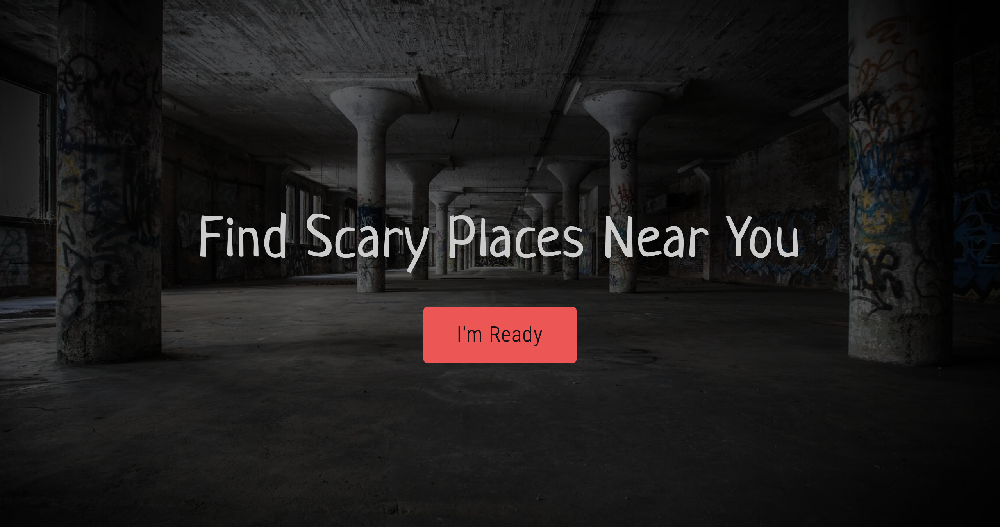

Scary Places is a website designed to find scary places near you.
This is a personal project of mine that I am currently developing. It is a fully responsive static website. I was inspired to build this project when I couldn't find any websites exclusively dedicated to finding scary places.
The site is designed to entice the user with the idea of finding scary places near them. Additionally, the user can educate themselves on any given scary place by reading up on it in the blog section. I am currently developing the location finder component that will search a database to find and display scary places for the user.
Developer tools I used while working on this project: